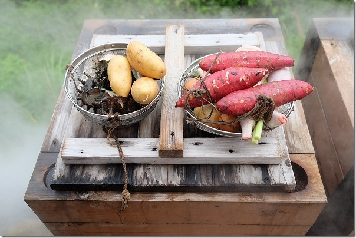
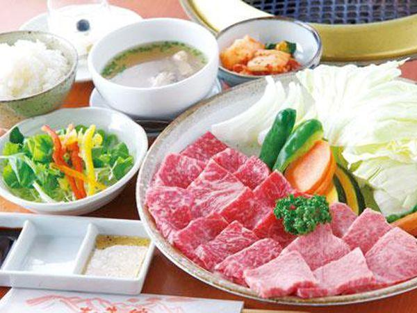
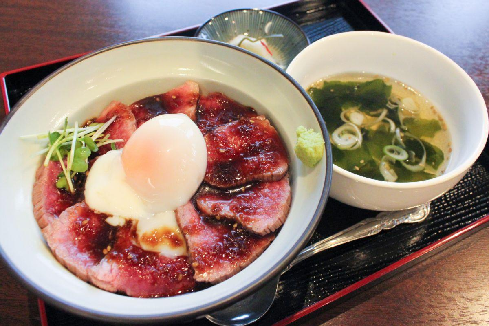

MinamiAso Gourmet
WaitaOnsen Jikokumushi



Jigokumushi,which are steamed in a stone steamer which utilizes steam from a hot spring
You can steam the foods in stone steamer for free if you use the hot spring at site.
You can also buy ingredients at site and it is steamed up for about 30 minutes while
you are in the hot spring.
Steamed dish with hot spring are delicious and healthy because the taste is condenced and
excess oil is removed.
2816 Nishizato Oguni-machi,Aso-gun, Kumamoto-ken 869-2504 Japan
+81-967-46-5750
Information
AkaUshi no Yakata



Akaushi, a specialty of the Aso region, has a lot of lean meat and a moderate amount of fat,
and is both delicious, soft and healthy.
"Akaushi no Yakata" is a yakiniku restaurant specializing in safe and secure "Akaushi beef"
raised in the rich grassland of MinamiAso.
2815 Hisaishi Minamiaso-mura,Aso-gun, Kumamoto-ken 869-1412 Japan
+81-967-67-0848
Information
Top page